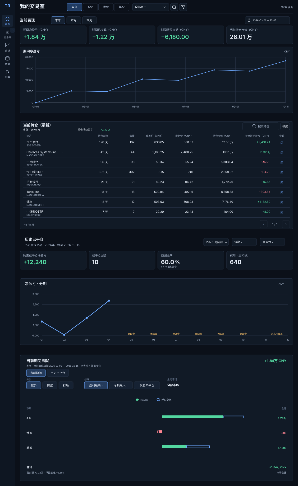

历史曲线与贡献柱
两组原型沿用已确认布局和控件。本轮完整读数、状态辨识与切换效果已于 2026-10-21 确认，现纳入 V2.4.1。原型中的详情连接示例不替代完整详情规范。
一、完整已平仓曲线
从单年切到跨年，再比较每期与累计、胜率与回合数。检查无回合、未来、缺失与错误状态。
- 轴、四卡与提示框随范围一起更新
- 鼠标与键盘读取完整金额及原因
- 模式切换保持绘图区尺寸
二、贡献柱语义与几何
默认使用已确认配色，并保留旧配色供追溯对照。查看实心／中空、正负贡献及极小值的表达。
- 复用底部单一贡献区及已确认筛选条
- 市场 → 标的 → 详情连接示例 → 返回
- 历史模式不混入浮盈变化
首页位置参考 · 保留已确认模块顺序
以下为冻结 V2.4 整页参考，用于定位：当前表现 → 当前持仓 → 历史统计 → 底部唯一贡献区。图中旧控件及颜色不代表本轮新选择。
